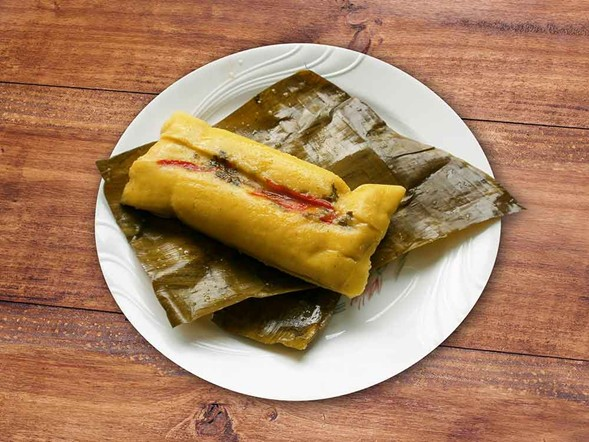

Hallaca Criolla-
Este alto típico es similar a una arepa rellena o parecida a un tamal, está hecha con masa de maíz y en su relleno contiene carne, verduras y condimentos, para su preparación es necesario envolverla en hojas de plátano y cocinarla al vapor, tiene cierta influencia venezolana, pero es tradición en al Orinoquia.
Esta hallaca criolla representa la mezcla de tradiciones indígenas, africanas y europeas, es un plato festivo que se prepara en las celebraciones familiares y comunitarias, con esto va aumentando y reforzando l identidad cultural de la Orinoquia. En la preparación de este plato se ve un elemento importante que es la unión, ya que para la preparación de este es necesario tiempo y colaboración, lo que la convierte en un ritual social y gastronómico.
